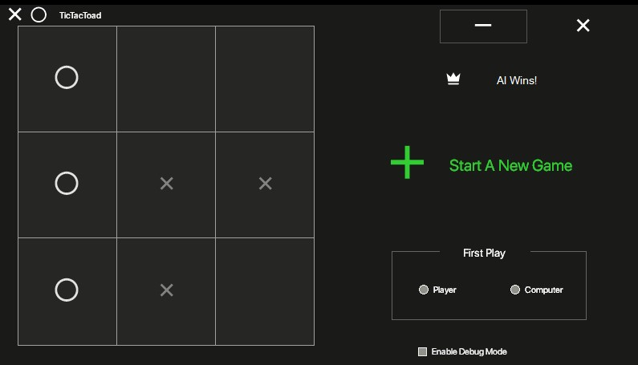

My Past Works
MEGAMUN '23
MEGAMUN is an annual MUN (Model United Nations) event hosted by Delhi Public School.
Last year, ie in 2023, I had the wonderful opportunity to design the website for the event. My work involves mostly the front-end aspects( the UI, write-ups, the contents, and some light image editing).
As of writing, the website is still functional and can be viewed here

Tic Tac Toad
An experimental tic-tac-toe playing algorithm that does not rely on Machine Learning. Runs on a basic block-first ideology and looks up to 2 moves in the future.
Read more about it here
- 
EXPERIMENTAL GAME
This is a game which involves guns, blood and ragdolls✨✨! It doesn't have any story or anything behind it and merely serves as a test of how much I can push my coding skills.
The player is limited to one gun. The game is currently, and forever will be, in the development stage.
Engine Used: Unreal Engine w/ Visual Scripting
EXPERIMENTAL CHESS GAME
Another experimental game. It's still in development. The idea behind it was to use the FEN notation to generate the board at the start of the game. We then update the board, along with the FEN string to show the current state of the board.
Most mechanics have been coded in, except for most notably, the movement of the king.